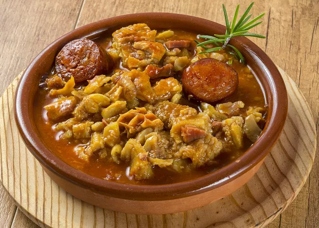

Tripe Recipes
Description
Last on our list we have a Tripe, this meal has embedded itself into South African culture and is now consired a traditional dish by many Tribes accross the country.
The meal is soup made of a Cows stomach,intestine, vegitables mainly your onions abd carrots but some add cabbage.
The meat needs to thouroughly cleaned before cooking to remove all the sand granules that are consumed by cows daily.
It also requires alot of time on the stove to ensure that the meat becomes soft and tender, but is definetly worth the trouble once its ready
Th

Ingredients
- 2 ½ pounds honeycomb beef tripe
- ½ cup white vinegar
- 2 teaspoons salt
- 1 teaspoon vanilla extract
- 1 large bay leaf
- 1 tablespoon olive oil
- 4 ounces pancetta bacon, diced
- 1 medium onion, diced
- 6 cloves garlic, minced
- 3 cups marinara sauce
- 1 teaspoon red pepper flakes
- 1 (15 ounce) can garbanzo beans, drained
- 1 bunch fresh mint leaves, chopped
- salt and ground black pepper to taste
- ¼ cup freshly grated Parmigiano-Reggiano cheese, or to taste
Steps
- Gather all ingredients.
- Fill a large stockpot with 5 quarts cold water, tripe, vinegar, 2 teaspoons salt, vanilla, and bay leaf; bring to a boil over high heat. Skim off any foam, then reduce the heat to medium-low, cover, and simmer for 1 1/2 hours.
- Transfer tripe to a plate and set aside to cool. Reserve 2 cups cooking liquid.
- Heat oil in a large skillet over medium heat. Add pancetta and onion; cook and stir until pancetta is browned and onion is translucent, 6 to 7 minutes. Stir in garlic and cook until fragrant, 1 to 2 minutes.
- StirCut tripe into 1-inch cubes; add to sauce and stir to combine. Simmer for 30 minutes, adding remaining 1 cup cooking liquid if needed.in marinara sauce, 1 cup cooking liquid, and pepper flakes. Reduce the heat to low and simmer for 30 minutes.
- Stir in garbanzo beans and mint, season with salt and pepper, and sprinkle Parmigiano-Reggiano over top.
Home